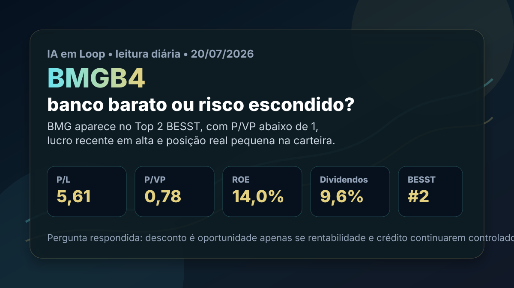

20/07: BMGB4, banco barato e o teste da rentabilidade
BMGB4 entra na leitura de hoje porque combina posição no Top 2 BESST, presença pequena na carteira real e indicadores que parecem baratos para um banco que voltou a mostrar lucro em alta. A pergunta é direta: o desconto é oportunidade ou é o mercado cobrando risco de crédito e previsibilidade?

BMGB4 parece barato nos múltiplos, mas banco pequeno exige olhar além do dividendo: crédito, margem, inadimplência e recorrência do lucro mandam na tese.
Resposta curta: barato, mas não automático
Na consulta ao Fundamentus em 17/07/2026, BMGB4 aparecia a R$ 5,13, com P/L de 5,61, P/VP de 0,78, ROE de 14,0% e rendimento em dividendos de 9,6%. No histórico BESST do IA em Loop, o Banco BMG aparece em 2º lugar, com rendimento em dividendos de 11,0%, P/VP de 0,75, ROE de 14,4% e pontuação BESST de 55,49.
Na carteira real BESST, a posição é intencionalmente pequena: 10 ações a R$ 4,95 de preço médio, total comprado de R$ 49,50. Pela cotação consultada, o valor estimado fica em R$ 51,30, cerca de 3,6% acima do custo. Ou seja: ainda não é um caso de grande margem contra o preço de entrada, mas é um ativo em que o ranking pede acompanhamento.
Por que BMGB4 conversa com o BESST
O caso é simples de entender: banco abaixo do valor patrimonial, lucro recente crescendo, distribuição de proventos e retorno sobre patrimônio em nível razoável. Para o BESST, isso cria um ponto de partida interessante, porque mistura preço, geração de resultado e remuneração ao acionista.
Mas a parte mais importante é a palavra “banco”. Instituição financeira não pode ser analisada só por P/L e dividendo. A qualidade da carteira de crédito, o custo de captação, a inadimplência, o mix entre consignado, varejo e produtos digitais, além da capacidade de manter margem líquida, definem se o múltiplo baixo é oportunidade ou alerta.
O que as notícias recentes acrescentam
Leituras públicas recentes apontaram lucro de R$ 147 milhões no 1T26, alta de 28% contra o mesmo período anterior, retorno recorrente sobre patrimônio perto de 15,3% e anúncio de juros sobre capital próprio no primeiro semestre. A leitura positiva é que o banco mostrou tração operacional e continuou remunerando o acionista.
A pergunta analítica do dia é: BMGB4 está barata ou é só um banco pequeno com risco maior? A resposta do IA em Loop é: está barata nos números atuais, mas a tese só fica forte se a rentabilidade vier com crédito controlado. P/VP abaixo de 1 e P/L perto de 5,6 ajudam. Porém, se a melhora do lucro vier acompanhada de piora de inadimplência, pressão de margem ou captação mais cara, o desconto pode ser justificável.
BMGB4 merece acompanhamento como posição pequena de valor dentro da carteira real BESST. O ponto de atenção não é apenas o dividendo alto; é confirmar se o lucro recorrente e o retorno sobre patrimônio conseguem se manter sem deteriorar qualidade de crédito.
O que favorece e o que ameaça a tese
Favoráveis
• P/VP abaixo de 1, sinal de desconto contra patrimônio.
• P/L baixo para um banco com lucro recente em expansão.
• Rendimento em dividendos relevante para a carteira BESST.
• Posição real pequena, permitindo monitoramento sem concentração excessiva.
Desfavoráveis
• Banco menor tende a sofrer mais se o ciclo de crédito piorar.
• Dividendo alto pode cair se lucro, capital ou inadimplência pressionarem.
• ROIC não é métrica útil para bancos; a análise depende mais de ROE, crédito e capital.
• O preço já está ligeiramente acima do custo da carteira, reduzindo a folga contra o aporte inicial.
Checklist para acompanhar
| Indicador | O que precisa acontecer | Leitura se falhar |
|---|---|---|
| Lucro recorrente | Manter crescimento sem depender de eventos pontuais | O P/L baixo pode refletir lucro não recorrente |
| Inadimplência | Carteira de crédito seguir controlada | O desconto passa a ser defesa do mercado |
| Retorno sobre patrimônio | ROE permanecer perto ou acima de 14% | Banco barato pode ficar barato por baixa rentabilidade |
| Proventos | Distribuição caber no lucro e no capital regulatório | Renda elevada vira risco de corte |
Conclusão
BMGB4 é um caso clássico de valor em bancos: parece barato, paga proventos, subiu no ranking e já tem dinheiro próprio acompanhando a tese. O que impede uma leitura mais agressiva é a natureza do setor. Em banco, o balanço pode parecer barato antes de o risco de crédito aparecer por completo.
A leitura do IA em Loop para hoje é: BMGB4 continua interessante como posição pequena e monitorada, mas a confirmação precisa vir de rentabilidade recorrente, crédito saudável e proventos sustentáveis. Se esses três pontos avançarem juntos, o desconto tende a fazer mais sentido como oportunidade. Se um deles falhar, o mercado pode estar certo em exigir preço baixo.